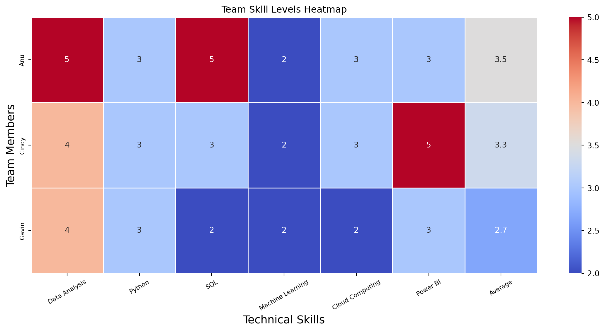

Our team conducted an overview of our current technical skills when it comes to Business Analytics and our skill levels. The goal was to understand where the group’s strengths and weaknesses were, and understand how the data that was collected could relate to the data that was observed in the research conducted. This was used to identify strengths and weaknesses for the group while also identifying potential gaps within the group.
Code
import pandas as pd# Extended skills dataskills_data = {"Name": ["Anu", "Cindy", "Gavin"],"Data Analysis": [3, 1, 4],"Python": [5, 3, 4],"SQL": [4, 2, 5],"Machine Learning": [3, 1, 4],"Cloud Computing": [2, 2, 3],"Power BI": [3, 2, 4],}# Create DataFrame and set indexdf_skills = pd.DataFrame(skills_data).set_index("Name")# Ensure all columns are numericdf_skills = df_skills.apply(pd.to_numeric)# Add average skill score across all toolsdf_skills["Average_Skill"] = df_skills.mean(axis=1)# Style with borders and centered textdf_styled = df_skills.style.set_table_styles([ {'selector': 'th, td', 'props': [('border', '1px solid black'), ('text-align', 'center')]}])df_styled
Data Analysis
Python
SQL
Machine Learning
Cloud Computing
Power BI
Average_Skill
Name
Anu
3
5
4
3
2
3
3.333333
Cindy
1
3
2
1
2
2
1.833333
Gavin
4
4
5
4
3
4
4.000000
Code
import seaborn as snsimport matplotlib.pyplot as pltplt.figure(figsize=(10, 6))sns.heatmap(df_skills, annot=True, cmap="coolwarm", linewidths=0.5)plt.title("Team Skill Levels Heatmap")plt.xlabel("Technical Skills", fontsize=14)plt.ylabel("Team Members", fontsize=14)plt.xticks(rotation=30, fontsize=14) plt.yticks(fontsize=14)annot_kws={"fontsize":12}plt.show()

2 What the Heatmap Shows
When looking at the heatmap it shows that our team still feels relatively new to these technical skills and highlighted in blue are the most notable areas for growth. One person in our group is a Business Analyst while the other two do not use these tools on a daily basis and due to this lack of exposure likely contribute to a lack of technical skill observed in the heatmap. Increased exposure and experience outside of an educational setting could contribute to increased technical skills within the group.
Data Analysis represents the strongest skill that our group presents, while this isn’t a program it was noted as one of the top skills that impacted salary, alongside experience and being remote. Regardless of the type of data analysis experience, having the ability to analyze data is more vital according to the data represented in the ML Model section of this website. Having a core analytical ability puts our group ahead of most canidates that have vast python experience depending on the types of jobs that they are looking to apply for, and adding the other analytical tools such as Python and PowerBI only empower our group further in the ability to find higher paying jobs.
Python is one of the strongest skills across the team and this is likely in large part due to the exposure that has occured during this course, while no one in the group are experts in Python our technical skill levels indicate that we have a foundational understanding of the programming language and are able to navigate the complexities and manipulate data in order to meet organizational goals and objectives required for data analysis, automation, and model development that was observed during this course. Cloud computing was one of the areas where we struggled as a group and this was in large part due to a lack of exposure and could likely increase in environments where this was utilized similar to our educational environment like this class.